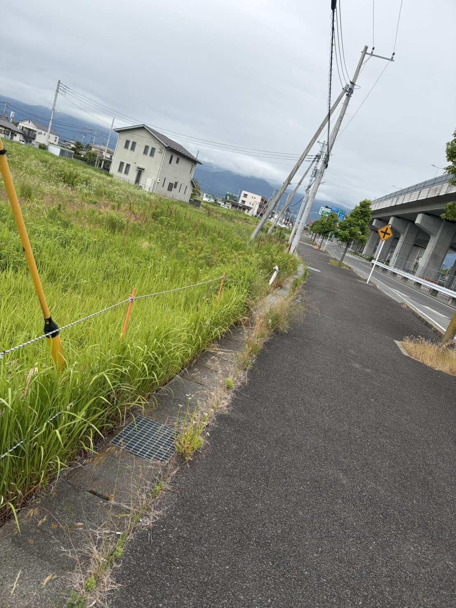
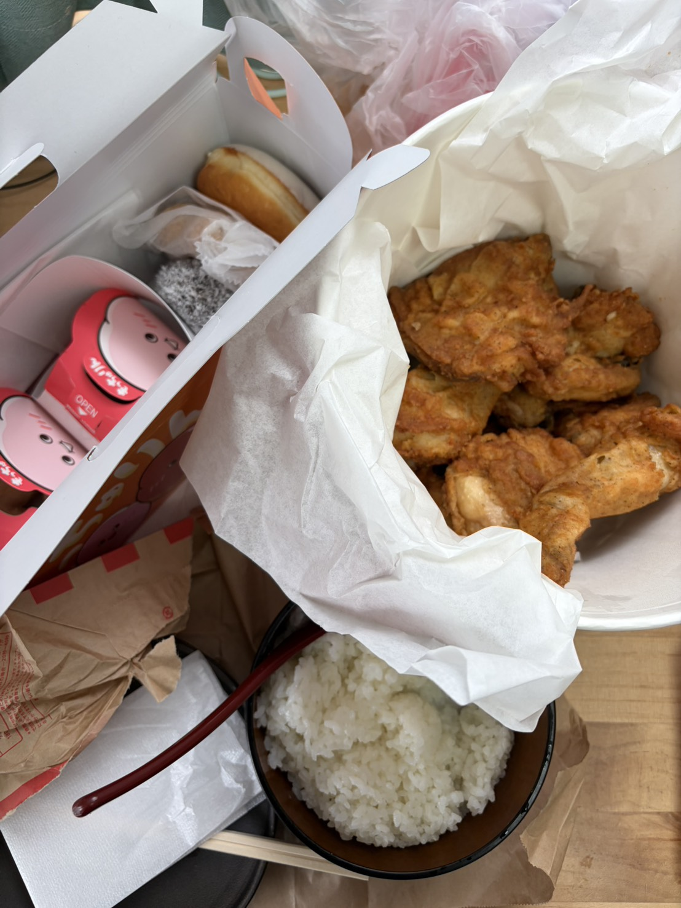

本来はTOEICを受ける予定だったんやけど諸事情でTOEFLを受けることになって
今日受けてきたよ！受験料は25,000円，高すぎる．なんでこんなに高い，というとReading, Listeningに加えてWriting, Speakingを加えた
４技能すべてのテストだからみたい．寝坊が怖かったので寝ずに徹夜でそのままテストを受けることを決めた．
テスト会場は県内にあるねんけど最寄駅から徒歩25分のところでかなり遠い．高速道路かバイパスかしらんけど田舎道を早朝，徹夜の状態で25分間歩いた．
それもただの徹夜では無い．というのも最近寝れてなくて、っていうのは時間がないとかではなくただ眠れないって感じでここ1週間1日平均3,4時間くらいしか寝れてない．
気絶するかと思った．強気な価格設定といい，TOEFLの洗礼を受ける青木．やっとの思いで会場に着いた．まずは受付を済ませる．そこでは軽い説明と同意書を貰った．
同意書は当然サインが必要なのだが，内容がすべて英語で書かれているから同意書が読めない．でもなんかいい感じのことが書いてあった気がしたのでとりあえず署名をした．
こういう人間が悪質商法に引っかかるのではないだろうか．会場には試験が始まるまでに5人くらい来ていたが，帰国子女っぽいひとが２人(日本語がちょっとかたことだった)
，がっつり外国人風の人が1人．あとの人は試験前にTOEFLの参考書をめちゃくちゃ熱心に読んでいた．以上のことからおわかりのだろうが，非常にアウェーである．日本で試合をしている外国人格闘家の気持ちが少しわかった気がした。
気持ちだけは負けないように神妙な面持ちで待ち時間を過ごしていたが，実際のところ、この後食べるケンタッキーのことで頭はいっぱいであった。
部屋にAirdog ofいい空気清浄機があった。もしかしたらテストの出来が良かった人は持って帰ってもいいのかもしれない。試験は工場団地の一角のパソコン教室で行われる。
もしここでバトルロワイアルが開催された場合、英語力はこの中で最下位かもしれないが、フィジカルは明らかにて勝っているから生き残れるかもしれない。しかし、昨今はコンプラも厳しい時代となっているため、開催はされないであろう。
もし開催されても料金はTOEFLと同じく参加費は25000円だろうから払えるはずもなく、不戦敗が濃厚な気がしている。テスト前に資本主義の洗礼を浴びた．
そんなことを考えているうちに時は経ち，時刻は午前９時２５分．あと５分で試験は始まる．
戦闘準備のため，トイレに向かった．トイレのドアを開けて中に入る．驚いた．トイレがびっくりするぐらい綺麗だった
受験料25000円はトイレに使われているのかもしれないとすら思った．もうすでに受験料の元は取れているであろう．
30分になりスタッフの方に番号で呼ばれた．トーフルでは本人確認のために，マイクに向かって自分の名前と今日の日にち，不正をしませんという宣誓文を英語で録音する必要がある．
僕が呼ばれたのは，恐らく外国人（アジア系）であろう女性の次だった．その方も英文で宣誓するのだが明らかにネイティブだった．女性の番が終わり，次は僕の番である．録音はスタッフの前で行う．
あの女性の後にカタカナ英語で話すと恥ずかしいので，ちょっとネイティブ風にかまそうと思ったが，そううまくいかない．今日の日付，06/06/2026を英語でToday~で言うのだが，６月を英語で何と言うのかが分からない．
高専卒の弱みが露呈した（高専では英語ではなく技術英語と言って工学に関する英語を学ぶため，一般的に知っているべき英単語の教養が足りない）．
中学生のころ，トトロの都市伝説が好きで，主人公の女の子のモデルが5月生まれで(ちなみに青木もだよ)，５月を英語にするとMayであることから「さつき」という名前になったということとかを夢中になって調べていた．なぜか知らないがそれがフラッシュバックして五月はMayだ！とわかった．
語感的にMayJuneJulyの並びが記憶にあったため，６月がJuneであることを思い出し，本人確認は無事終了した．それに続きテストも無事終了したのだった．その後、ご褒美にケンタッキーとミスドを食べた。
チキンが美味しすぎて株を買おうと思ったがtoeflで25000円が飛んだので諦めた。僕はチキンの食べ方がガチで上手くて食べた後、ほとんど何も残らない。今話題の食い尽くし系なのかもしれない。でも流石に8ピースは食べきれなかったから夜ご飯に食べたよ！一度で2度美味しいってやつやね。しばらくは大丈夫やけどまた食べたい。
次はミスドを食べた。僕が1番好きなドーナツはココナッツチョコレートっていうんは有名な話やと思う。そんなココナッツの対抗馬の、新興勢力もっちゅりんを食べさせて頂いたから正直レビューするね。一年前に発売された時に買えんくて1年中頭の中にあったから期待値はかなり高かった。それ超えられるか。評価は味、見た目、値段、量、好みの5項目でいきます。
まず見た目なんやけどこれに関しては最近、ルッキズムが加速してるから明言を避けます。味に関してはわらび餅とポンデリングの中間って感じでかなり、名前の通り餅感が強かくて流行りそうな食感だったね。ちゃんと美味しかったから80点。値段は覚えてへんからとりあえず60点にしとく(ちなみに高専は60点が赤点のボーダーライン)。量は普通くらいやから70点。
好みに関しては普通のドーナツの方が好きだったから75点。計算するのめんどいから計算してないけど総合は75点くらいかな？なんかこのレビュー鼻につくな。自分で読んでてイライラしてきたからもうやらない。ちなみにココナッツチョコレートは100,000,000点です。ちなみにこれらを食べた後、嘘のように爆睡した。スラムダンク読みたい。

